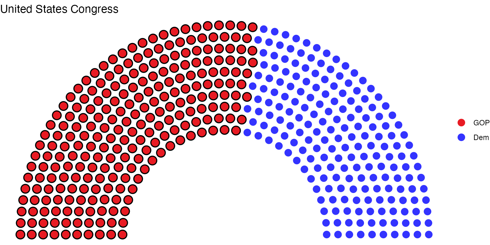

How to highlight government or party in control of the legislature
Zoe Meers
2024-05-19
Source:vignettes/d_highlight-government_4.Rmd
d_highlight-government_4.RmdHighlighting governments or parties in control of legislative chamber
We can specify whether a party is a part of the government (or
otherwise has control of the legislature if they hold a majority of
seats) in our visualization by using
geom_highlight_government().
geom_highlight_government() surrounds the circle with an
outline.
115th Congress
us_congress <- election_data %>%
filter(country == "USA" &
year == 2016 &
house == "Representatives")
head(us_congress)
#> year country house party_long party_short seats government colour
#> 1 2016 USA Representatives Republican GOP 241 1 #E81B23
#> 2 2016 USA Representatives Democratic Dem 194 0 #3333FF
us_congress <- parliament_data(election_data = us_congress,
type = "semicircle",
parl_rows = 10,
party_seats = us_congress$seats)
head(us_congress)
#> year country house party_long party_short seats government
#> 1 2016 USA Representatives Republican GOP 241 1
#> 1.1 2016 USA Representatives Republican GOP 241 1
#> 1.2 2016 USA Representatives Republican GOP 241 1
#> 1.3 2016 USA Representatives Republican GOP 241 1
#> 1.4 2016 USA Representatives Republican GOP 241 1
#> 1.5 2016 USA Representatives Republican GOP 241 1
#> colour x y row theta
#> 1 #E81B23 -2.000000 2.449294e-16 10 3.141593
#> 1.1 #E81B23 -1.888889 2.313222e-16 9 3.141593
#> 1.2 #E81B23 -1.777778 2.177150e-16 8 3.141593
#> 1.3 #E81B23 -1.666667 2.041078e-16 7 3.141593
#> 1.4 #E81B23 -1.555556 1.905006e-16 6 3.141593
#> 1.5 #E81B23 -1.444444 1.768934e-16 5 3.141593
us <- ggplot(us_congress, aes(x, y, colour = party_short)) +
geom_parliament_seats() +
geom_highlight_government(government == 1) + #specify the variable you want to highlight here!
theme_ggparliament() +
labs(colour = NULL,
title = "United States Congress") +
scale_colour_manual(values = us_congress$colour,
limits = us_congress$party_short)
us
Although the primary purpose is to highlight members of a governing coalition, this function is not limited to highlighting governments. If, for example, you wish to highlight the Australian government’s front branch, write
australia <- election_data %>%
filter(country == "Australia" &
house == "Representatives" &
year == 2016)
australia <- parliament_data(election_data = australia,
party_seats = australia$seats,
parl_rows = 4,
type = "horseshoe")
au <- ggplot(australia, aes(x, y, colour = party_short)) +
geom_parliament_seats() +
geom_highlight_government(row == 1 & government == 1) + # this highlights the front bench.
theme_ggparliament() +
labs(colour = NULL,
title = "Australian Parliament") +
scale_colour_manual(values = australia$colour,
limits = australia$party_short) +
theme(legend.position = 'bottom')
au